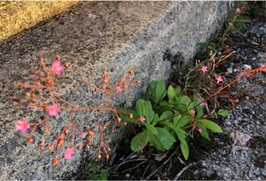
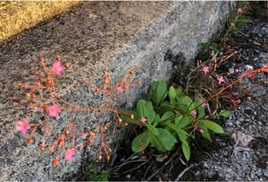
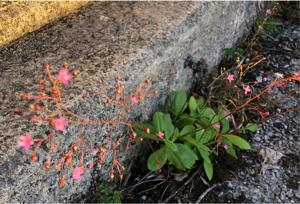

うるがいの話 ある日
最新: 両替機
うるがいとは 前提知識です
カニの画像をクリックすると『うるがいの話』サイトを表示します
うるがい(ｳﾙｶﾞｲ urugai)とは、『もずくがに』の名前でとても大きくなります。
たながー（ﾀﾅｶﾞｰtanagaa）とは手長えびのことで、何種類かあり大きいのは車 エビぐらいになります。
ぶながー(bunagaa)とは、赤い髪の毛、赤い身体、そして身長は１ｍ２０ｃｍ ぐらい、川の蟹を食べているの目撃された。場所は沖縄県国頭郡大宜味村のと ある村僕の隣近所に住んでいる爺さんから、聞いた話です。
2021年08月26日 (木）
両替機
16:58

達磨寺へ参拝に行く、賽銭の小銭が殆どない。小銭入れの皿をみると、なぜが
一円玉と百円だけが、１０円玉はヨメが自分の財布に入れているようだ。自動
車の一年点検（バッテリー交換も含め４万円ほど）の帰りに、銀行に寄って両
替をする。カードを持っていれば一日一回は無料、ただし枚数の制限がある。
２百円を払って５円玉と１０円玉の両替を行う。２千円札は記念のため２枚、
あと５千札も少々。両替する金種を制限の範囲で設定するのだが、これが、難
しい、両替機のまでオロオロ（多分）していたら、行員の女性に支援して貰う
後ろに次の人が並んでいる、少し恥ずかしい。次は準備してから両替機に挑も
うと決意を新たにする。カードだけでキャシュを持たず、生活するコマシャー
ルがあるが行き過ぎていると思うが。

 
